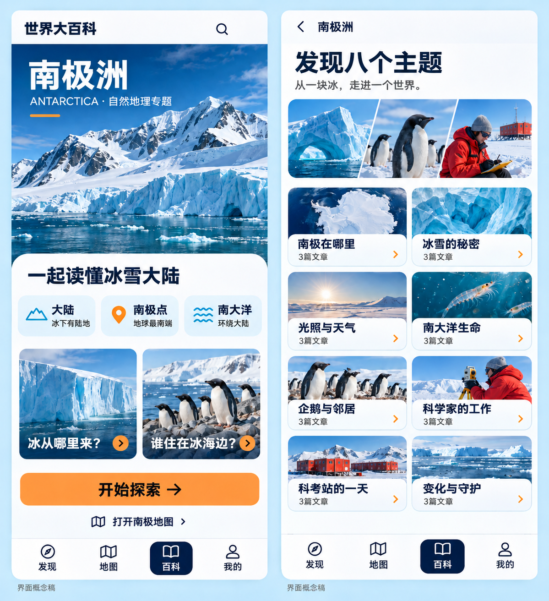
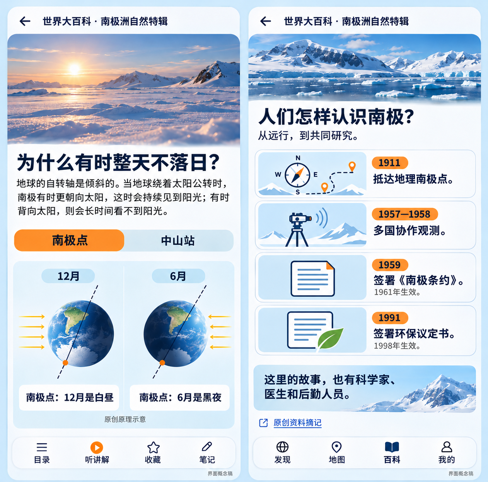

世界大百科 / 专题设计2026.11.14 · 设计 1.0
8 组 / 16 状态核心界面效果图
24 篇 / 8 主题文章规划
12 个 / 3 条地点与阅读路线
18 道 + 6 项闭合任务与开放观察
南极在哪里冰雪的秘密光照与天气南大洋生命企鹅与邻居科学家的工作科考站的一天变化与守护
本页为界面设计稿，尚未实装。画面中的地图、摄影与科学图解用于视觉说明；正式开发使用核验后的地理数据、有授权的实拍和可交互组件。内容更新服务本期暂缓。
设计组 01 · AN01 / AN02专题首页与八大主题
冰雪海岸大图、三条关键认识与八个主题，让孩子从问题进入南极。
查看原尺寸 ↗
AN01 / AN02 · 图稿文字、导航与科学表达的实现口径见视觉交接。
设计组 02 · AN03 / AN04南极投影地图与地点抽屉
南极点居中的极地图集；全洲、半岛与罗斯海视图，手机抽屉和平板双栏。
查看原尺寸 ↗
AN03 / AN04 · 图稿文字、导航与科学表达的实现口径见视觉交接。
设计组 03 · AN05 / AN06冰雪阅读与分类互动
看懂陆地冰如何延伸入海，再分清冰盖、冰架和海冰。
查看原尺寸 ↗
AN05 / AN06 · 图稿文字、导航与科学表达的实现口径见视觉交接。
设计组 04 · AN07 / AN08南大洋食物网与帝企鹅阅读
沿着食物关系认识磷虾与邻居，观察帝企鹅的身体和行为。
查看原尺寸 ↗
AN07 / AN08 · 图稿文字、导航与科学表达的实现口径见视觉交接。
设计组 05 · AN09 / AN10科学任务与科考站详情
走近冰芯、卫星与气象记录，再看看科考站里的协作和日常。
查看原尺寸 ↗
AN09 / AN10 · 图稿文字、导航与科学表达的实现口径见视觉交接。
设计组 06 · AN11 / AN12极昼极夜与认识南极的时间线
用不同月份解释极昼极夜，从历史线索认识今天的科学合作。
查看原尺寸 ↗
AN11 / AN12 · 图稿文字、导航与科学表达的实现口径见视觉交接。
设计组 07 · AN13 / AN14探索任务与我的南极发现
自愿选择地图、关系和观察任务，以真实记录保存发现。
查看原尺寸 ↗
AN13 / AN14 · 图稿文字、导航与科学表达的实现口径见视觉交接。
设计组 08 · AN15 / AN16三站阅读路线与观察笔记
三站阅读可以跳读；观察表单从空白开始，给孩子留下表达空间。
查看原尺寸 ↗
AN15 / AN16 · 图稿文字、导航与科学表达的实现口径见视觉交接。
三条可以跳读的路线
一块冰的旅程 · 跟着磷虾认识生命 · 走进一次科学观察。每条三站，阅读顺序清楚，随时可以退出或换一个问题。
给后续开发的明确依据
已整理稳定内容 ID、页面状态、地图投影、数据兼容和验收要求。生图原稿与修订稿保留，正式实现逐页对照核验。